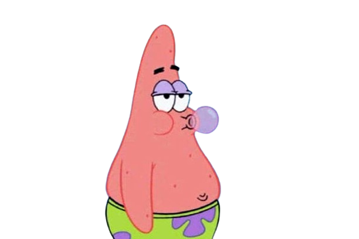

 Início
Patrick Estrela (Patrick Star no original) é um personagem fictício da série de televisão americana SpongeBob SquarePants. Ele é dublado pelo ator Bill Fagerbakke e foi criado e projetado pelo biólogo marinho e cartunista Stephen Hillenburg. Ele apareceu pela primeira vez no episódio piloto da série, "Help Wanted", em 1º de maio de 1999.
Visto como uma estrela-do-mar preguiçosa, com sobrepeso e estúpida, Patrick mora sob uma rocha na cidade subaquática de Bikini Bottom, ao lado do moai de Squidward Tentacles. Seu traço de caráter mais significativo é a falta de bom senso, que às vezes leva ele e seu melhor amigo, SpongeBob SquarePants, a se meterem em problemas. Patrick está desempregado e é um autoproclamado especialista na "arte de não fazer nada".
O personagem recebe reações positivas de críticos e fãs. Patrick foi incluído em várias mercadorias relacionadas a SpongeBob SquarePants, incluindo cromos, videogames, brinquedos de pelúcia e histórias em quadrinhos. Ele é um personagem principal no longa-metragem de 2004 The SpongeBob SquarePants Movie e no filme de 2015 The SpongeBob Movie: Sponge Out of Water.